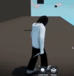
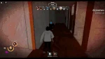

Jeffrey Woods (also called Jeff The Killer or Jeff), initially teased July 12th, 2024, and officially added on January 24th, 2025, is the seventeenth monster added to Pillar Chase 2. The well-known image of Jeff originated from a Newgrounds thread by killerjeff (sesseur). Though the character would be popularized from a fan creepypasta of the same name created by GamefuelTV's Brother (Travis). In the 2011 creepypasta, he was a victim of a freak accident leaving him severely disfigured both physically and mentally. He eventually began down a path of murder, beginning his rampage with an attack on his family. Now he is infamous for stalking people of rural towns for days on end before striking while they are asleep. He is the first monster to be added in the year 2025, and costs 1450 coins in the shop.
|  When pressing 1 Jeff wwill crouch down and have his footsteps and all idles silenced. When getting near a player, a 'Rage' meter will quickly build up along with highlighting them. Once the meter is full and you stand back up, Jeff will let out a loud laugh and gain a movement speed boost and damage boost for 5 seconds. But this also increases stamina drain. Standing back up without a full rage meter will grant a small movement speed buff for 2 seconds. If he attacks a player during his crouched state, he will deal 70 damage and will have an alternate kill animation. 2 second cooldown. |
 When pressing 2 Jeff will flourish his knife and begin laughing non stop, while this buff is active his stamina drain is decreased along with increased attack speed. The buffs have a normal duration of 10 seconds. If Jeff attacks a player while this buff is active, 3 seconds will be regained. If Jeff kills a player while the buff is active, 60% of the timer will be regained (about 6 seconds). While the buffs are active, Jeff will constantly laugh, revealing his position. When the ability ends, Jeff will be locked in place and play an animation and voice line. 18 second cooldown. |